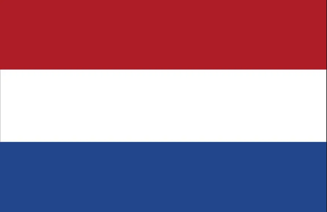
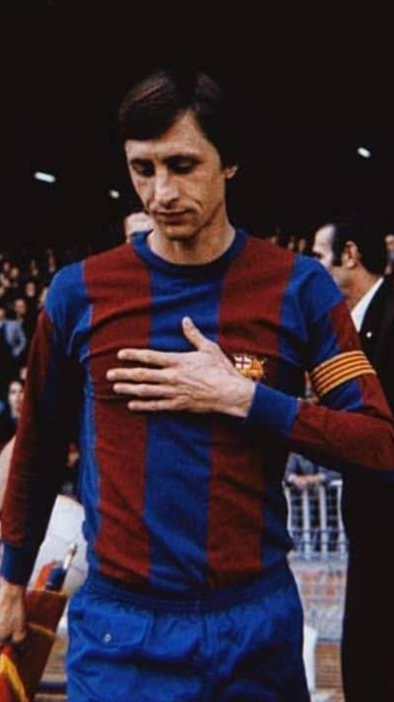
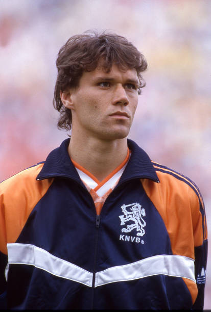
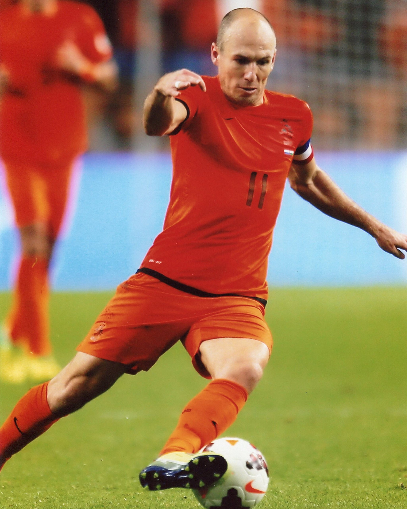
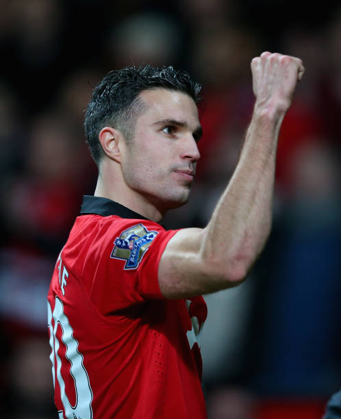

P. BAJOS
El eterno gigante europeo que revolucionó el fútbol busca romper su maldición y coronarse por fin campeón del mundo en 2026.





La selección con más finales disputadas sin haber ganado el título.
Creadores del "Fútbol Total" en la década de los 70.
Siempre candidata en fases de eliminación directa.
UEFA (Europa)
La Oranje / La Naranja Mecánica
Superar los Cuartos de Final y saldar la deuda histórica.